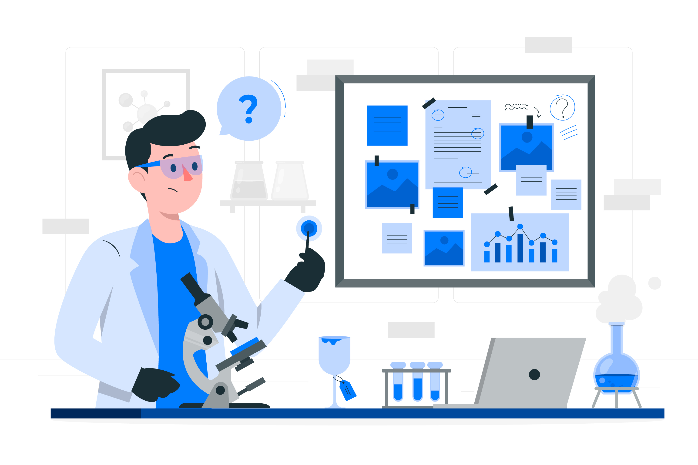
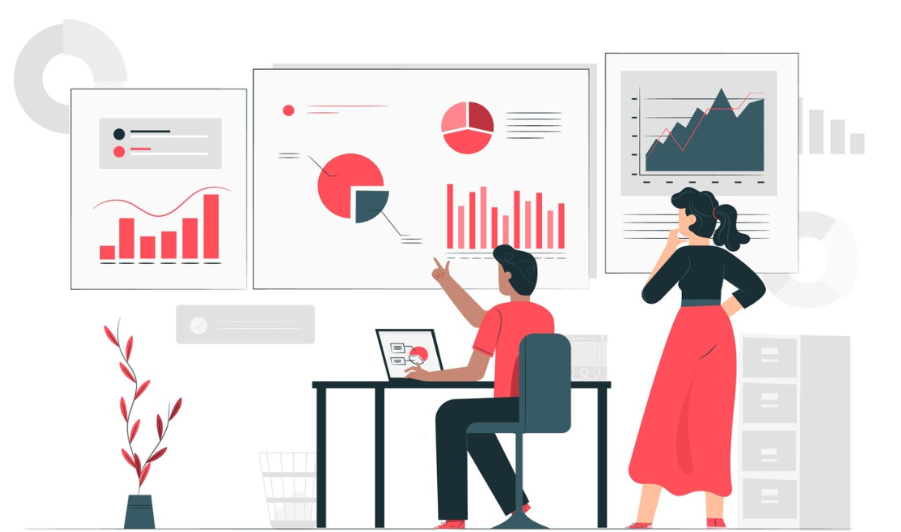

Understanding the Differences: Data Engineers, Data Analysts, and Data Scientists
In today’s data-driven world, organizations rely on specialized professionals to extract value from their information assets. Three key roles have emerged as pillars in the data ecosystem: Data Engineers, Data Scientists, and Data Analysts. While these positions share a common foundation in data, they serve distinct functions with different skill sets, tools, and responsibilities.
Data Engineers: Building the Foundation
### Core Responsibilities Data Engineers are the architects who design, build, and maintain the infrastructure that allows data to flow throughout an organization. They create the pipelines that transport data from various sources to storage systems where it can be accessed and analyzed.
Key Skills
- Programming: Proficiency in languages like Python, Java, or Scala
- Database Systems: Expert knowledge of SQL and NoSQL databases
- Big Data Technologies: Experience with tools like Hadoop, Spark, and Kafka
- ETL Processes: Building robust Extract, Transform, Load pipelines
- Cloud Platforms: Working with AWS, Azure, or Google Cloud services
Daily Work
A typical day for a Data Engineer might involve:
- Designing database schemas
- Optimizing data flows for performance
- Implementing data quality checks
- Setting up data warehousing solutions
- Creating APIs for data access
Background
Most Data Engineers come from software engineering or computer science backgrounds and have strong technical foundations in system architecture.
Data Scientists: Predicting the Future
 ### Core Responsibilities Data Scientists combine advanced statistical methods, machine learning, and domain expertise to extract deeper insights, make predictions, and solve complex problems with data.
Key Skills
- Advanced Statistics: Hypothesis testing, experimental design
- Machine Learning: Building predictive models
- Programming: Strong coding skills in Python or R
- Data Storytelling: Communicating complex findings
- Domain Expertise: Understanding business context
Daily Work
A typical day for a Data Scientist might involve: - Developing predictive algorithms - Training and evaluating ML models - Conducting exploratory data analysis - Testing hypotheses with statistical methods - Researching new analytical approaches
Background
Data Scientists typically have advanced degrees in quantitative fields like statistics, mathematics, computer science, or specialized data science programs.
Data Analysts: Interpreting the Present
 ### Core Responsibilities Data Analysts focus on examining existing data to answer specific business questions and provide actionable insights. They translate data into information that guides decision-making.
Key Skills
- Statistical Analysis: Understanding descriptive statistics
- Data Visualization: Creating charts and dashboards
- SQL: Writing queries to extract and manipulate data
- Business Intelligence Tools: Proficiency with Tableau, Power BI, or Looker
- Spreadsheet Mastery: Advanced Excel or Google Sheets techniques
Daily Work
A typical day for a Data Analyst might involve: - Creating performance reports - Building interactive dashboards - Conducting A/B test analysis - Identifying trends in customer behavior - Presenting findings to stakeholders
Background
Data Analysts often come from diverse backgrounds including business, economics, mathematics, or even self-taught paths with strong analytical mindsets.
How These Roles Interact
In an efficient data organization, these three roles form a symbiotic relationship:
- Data Engineers build the infrastructure and pipelines that collect and organize raw data
- Data Scientists leverage the same infrastructure to build models that predict future outcomes
- Data Analysts use this data to explain current business performance and trends
Career Progression
It’s worth noting that career paths in data can be fluid:
- Some Data Analysts develop programming and ML skills to become Data Scientists
- Some Data Scientists move into Data Engineering to better understand the full data stack
- Others specialize further within their domain, becoming experts in specific industries or techniques
Salary Comparisons (As of 2024)
| Role | Entry-Level | Mid-Career | Senior |
|---|---|---|---|
| Data Engineer | $85,000-$110,000 | $110,000-$140,000 | $140,000-$180,000+ |
| Data Analyst | $65,000-$85,000 | $85,000-$115,000 | $115,000-$145,000+ |
| Data Scientist | $90,000-$120,000 | $120,000-$150,000 | $150,000-$200,000+ |
*Note: Salaries vary significantly based on location, industry, company size, and individual experience.
Conclusion
While all three roles work with data, they serve complementary functions in the data value chain:
- Data Engineers focus on the infrastructure that makes data available
- Data Scientists focus on models that predict what will happen next
- Data Analysts focus on the insights that explain what’s happening now
Understanding these distinctions can help organizations build balanced data teams and help individuals chart their career paths in this rapidly evolving field.